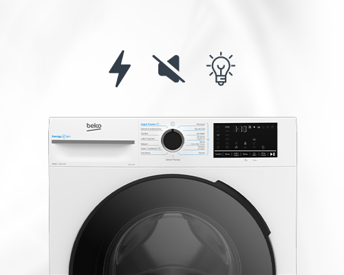
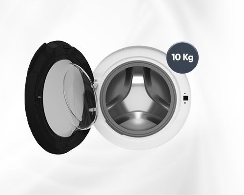
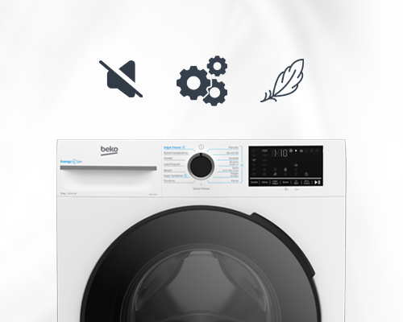
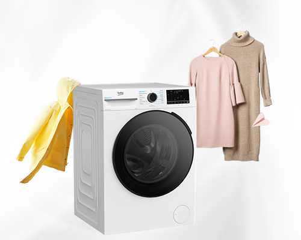
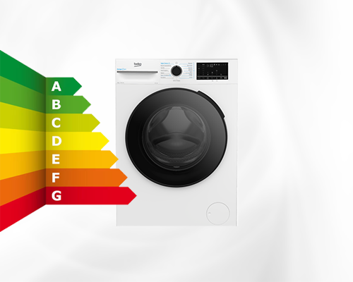
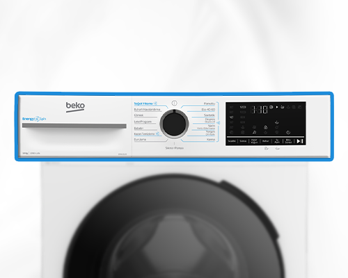

Beko CMX 10120 çamaşır makinesi güçlü ve akıllı özellikleriyle çamaşır yıkama deneyimini bir üst seviyeye taşır. Her evin olmazsa olmazı olan bu yenilikçi cihaz, modern yaşamın getirdiği zaman kısıtlamalarını göz önünde bulundurarak tasarlanmıştır. Evde çamaşır yıkama sürecini kolaylaştıran bu cihaz, kullanıcıların ihtiyaçlarına göre birçok özelleştirilmiş program sunar. Ayrıca günlük işleri çok daha yönetilebilir hale getirir. Geniş kapasitesi, inovatif teknolojileri ve enerji verimliliği sayesinde Beko CMX 10120 beko çamaşır makinesi, hem aile bütçesine hem de çevreye dost bir seçenek oluşturur. Aynı zamanda makinenin sessiz çalışma özelliği, özellikle kalabalık hane halkları veya apartman dairelerinde yaşayan kişiler için büyük bir avantaj sağlar. Harici faktörlerden etkilenmeden ev içerisinde huzuru koruyarak çalışabilen bu cihaz, çamaşır yıkama sürecini sorunsuz bir aktiviteye dönüştürür. Ekstra dayanıklı ve yüksek kaliteli malzemelerle üretilen cihaz uzun ömürlü kullanım sunarak kullanıcılarını hem ekonomik hem de çevresel anlamda destekler.

Beko CMX 10120 çamaşır makinesi, kullanıcılara üstün bir yıkama performansı sunarak birçok avantaj sağlar. Güçlü motoru ve sessiz çalışma özelliği ile dikkat çeken Beko CMX 10120 beko, en zorlu çamaşır problemlerine akıllı çözümler sunar. Bu cihaz hem tasarımında hem de teknolojik özelliklerinde ileri düzey mühendislik izlerini taşır. Akıllı teknolojileri sayesinde çeşitli kumaş türleri için en uygun programı seçmeye olanak tanırken çamaşırları hassas bir şekilde temizler. Ayrıca krom detaylar ve modern tasarım çizgileri, cihazın estetik açıdan da göz doldurmasını sağlar.
Beko CMX 10120 beko çamaşır makinesi ile entegre akıllı sensörler, çamaşır yükünü algılayarak yıkama koşullarını otomatik olarak ayarlar. Bu sayede gereksiz su veya enerji tüketimi önlenir. CMX 10120 çamaşır makinesi yorumları incelendiğinde bu inovatif özellikler kullanıcıların dikkatini çeker. Kullanıcı deneyimi açısından olumlu geri bildirimler ve ürünün pratikliği, bu cihazı evlerde vazgeçilmezi haline getirir.
Yıkama işlemini daha etkili kılan ileri seviye filtreleme sistemleri, deterjan kalıntılarını en aza indirerek daha temiz ve yumuşak sonuçlar elde edilmesini sağlar. Tüm bu özellikler bir araya geldiğinde Beko CMX 10120 çamaşır makinesi kullanıcı dostu bir yıkama deneyimi sunar.

10 kg çamaşır yıkama kapasitesine sahip makineler, özellikle kalabalık aileler için büyük bir kolaylık sunar. Tek seferde daha fazla çamaşır yıkama imkânı sağlayarak hem zamandan hem de enerjiden tasarruf etmenize yardımcı olur. Yorgan, battaniye gibi hacimli eşyaları bile rahatlıkla yıkayabilen bu makineler, günlük temizlik rutininizi pratikleştirirken aynı zamanda ekonomik kullanım avantajı sunar. Geniş iç hacmi sayesinde çamaşır yıkama sürecini minimum zahmetle maksimum verimlilikle gerçekleştirmenizi sağlar.

Beko CMX 10120, yüksek devirli çamaşır makinesi özelliği ile performansı konforla birleştirir. Bu cihaz, çamaşırların daha kısa sürede kurumasını sağlarken, verimlilikten taviz vermez. İnverter motor teknolojisi sayesinde güçlü ve sessiz bir çalışma sunarak kullanıcı konforunu önemli ölçüde artırır. Bu teknoloji, CMX 10120 makinenin motor hızını yıkama işlemi boyunca optimize ederek hem enerji tüketimini düşürür hem de daha sessiz bir çalışma ortamı sağlar. Gece saatlerinde bile rahatsızlık vermeden çalışabilmesi, kullanıcıların çamaşır yıkama zamanlarını daha esnek bir şekilde planlamalarına yardımcı olur. Ayrıca ses azaltma özelliği sayesinde ev halkını rahatsız etmez ve başka işleri yaparken dikkat dağınıklığı yaratmaz. Bu özellikler Beko CMX 10120 çamaşır makinesini, hem teknoloji hem de konfor açısından ideal bir seçim kılar.

CMX 10120 çamaşır makinesi, inverter motor teknolojisi, akıllı programlar ve kumaş dostu özellikler ile donatılmıştır. Hassas kumaşlardan günlük giysilere kadar geniş bir yelpazedeki çamaşırlar için farklı yıkama modları sunar. Bu modlar, kumaşların özelliklerine göre özel ayarlanarak her yıkamada en ideal sonucu elde etmenizi sağlar. Hijyen programları ile dezenfekte edici yıkamalar mümkün hale gelirken özellikle antibakteriyel yıkamalar, hem sağlığını hem de çamaşırların temizliğini gözeten bir yaklaşım sunar. Kumaş dostu bu programlar yün, ipek gibi hassas tekstil ürünlerinin dahi güvenle yıkanabilmesine olanak tanır.

Beko CMX 10120 çamaşır makinesi, yalnızca etkili bir çamaşır yıkama deneyimi sunmakla kalmaz, aynı zamanda yüksek enerji verimliliği ile de dikkat çekici bir performans sergiler. Çamaşır makinesi enerji sınıfı açısından üst sıralarda yer alarak yıllık enerji tüketimini minimum düzeylere indirir. Bu özellik, kullanıcıların elektrik faturalarında ciddi tasarruf sağlamalarına olanak verir. Bu da uzun vadede önemli ölçüde bütçe dostu bir avantaj sağlar.

Dijital ekranlı çamaşır makinesi Beko CMX 10120, modern tasarımı ve kullanıcı dostu arayüzü ile dikkat çeker. Ekranın sağladığı yüksek okunabilirlik, program seçimini ve ayarlamaları kolaylaştırırken, kullanıcı sırasında anında bilgi almayı mümkün kılar. Makinenin sahip olduğu zaman erteleme özelliği sayesinde kullanıcılar, meşgul oldukları saatler dışında çamaşırlarını yıkayabilir. Güvenli kullanımı ön planda tutan çocuk kilidi fonksiyonu da aileler için ek güvenlik sağlar.
Beko CMX 10120 çamaşır makinesini Jebinde çamaşır makinesi kampanyası kapsamında satın alan kullanıcılar, hızlı ve sorunsuz teslimatın keyfini çıkarabilir. Yetkili satıcıdan alınan bu ürün, uzun ömürlü kullanım garantisi sağlar. Jebinde güvencesiyle alışveriş yapan kullanıcılar, her açıdan avantajlı bir deneyim yaşayabilirler.